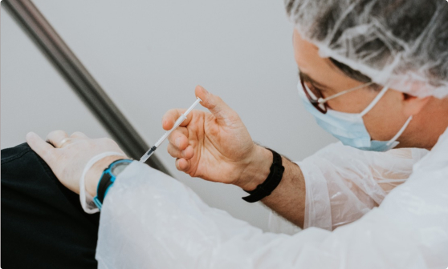
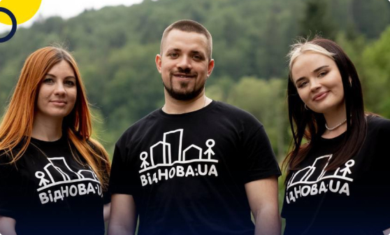
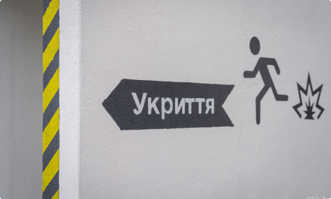

Наші проєкти
- Всі проєкти
- Поточні
- Реалізовані
«Спільно. Соціальні послуги» - «Інтегровані соціальні послуги та реагування на COVID-19 на сході України»

Поточні
вересень 2022 – лютий 2024
Проєкт «Спільно. Соціальні послуги» - «Інтегровані соціальні послуги та реагування на COVID-19 на сході України» (Договір № 137сп/12092022 про надання гранту від 12 вересня 2022р.
ВідНОВА 2023: Проєкт створення молодіжного центру в Пирятинській громаді

Поточні
2023
ВідНОВА 2023. Проєкт створення молодіжного центру в Пирятинській громаді.
Проєкти спільно з Global Synergy Group
Реалізовані
2023
-
Були реалізовані три наступних проєкта:
- «Екстрене гуманітарне реагування на надзвичаний віськовий стан в Україні»,
- «Евакуація 33 дітей сиріт та трьох дитячих будинків сімейного типу»,
- «Створення достойних побутових умов проживання дітей та сімей з дітьми в студентських гуртожитках Полтавського національного педагогічного університету імені В. Г. Короленка, Ізмаїльського державного гуманітарного універс
Бюджет проєкту - 608 000 грн
Укриття задля безпеки життя

Реалізовані
листопад 2022 – лютий 2023
Відокремлений підрозділ іноземної неурядової організації «Представництво центру з питань захисту цивільного населення в умовах конфлікту (CIVIC)”.
Бюджет проєкту - 405 000 грн